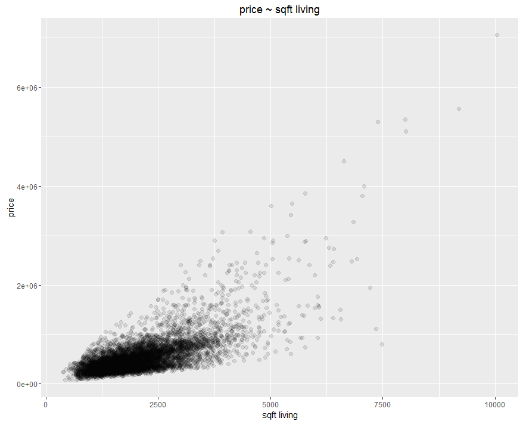
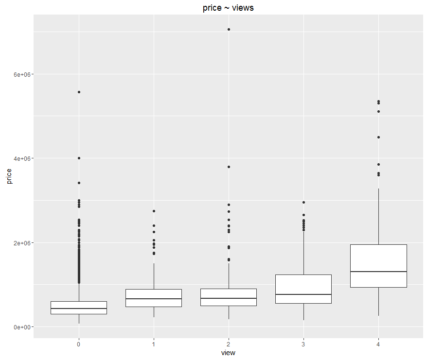
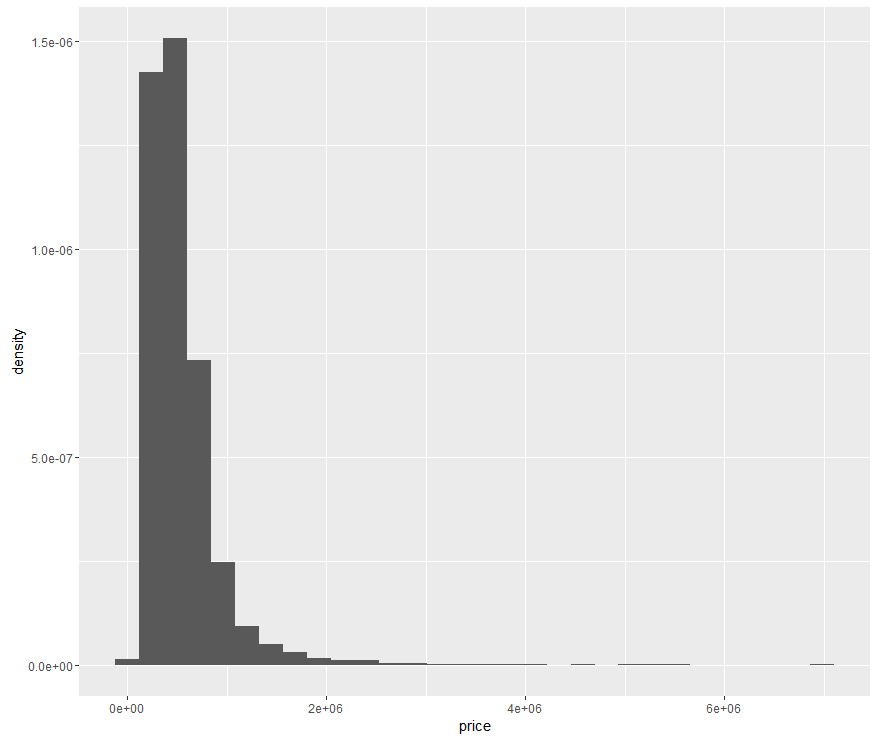
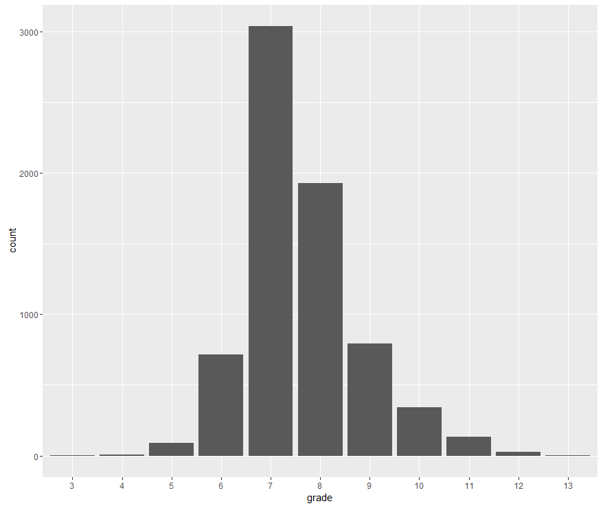

Introduction to awesome R package ggplot2 - graphic grammar.
Brief introduction about data visualization in EDA, using ggplot2 package in R.
Introduction
When we start analyzing various of data sets, the first step is always the exploratory data analysis (EDA). Generally we will try to find some characteristics of the data, and data visualization is an important way to do that.
Here I list five basic types of plot that will be useful in EDA:
scatter plot
Scatter plot is useful to show the relationship between two variables (both numerical and categorical variable). For example, we can use the scatter plot to display the relationship between people’s weight and height, people’s years of education and their average salaries.
line plot
Line plot is also a way to illustrate the relationship between two variables, specifically, it’s useful to visualize time series data, where the data is time indexed. For example, we can visualize the daily stock price of Apple in the past two years using line plot.
histogram
Histogram is a way to show the distribution of numerical (continuous) variables, such as the height of people. Personally speaking, the ‘limit’ version of histogram will be the plot of probability density function of the variable. In practice, we can also add a layer of density plot upon the histogram layer.
box plot
Like histogram, box plot is also one way to show the distribution of numerical variables. In addition, it has more characteristics of the data: it will attach with the quantiles of the data - minimum, 25% quantile, median, 75% quantile and maximum. It will be useful to let the outliers stand out.
bar plot
Bar plot is useful when we dealing with the distribution of categorical variables. For example, we want to know the usage of top 10 machine learning algorithms in FLAG.
In summary, scatter plot and line plot must applied on two variables; histogram, box plot and bar plot are the results of aggregation on data set, and usually applied on single variable. There is a helpful cheat sheet of data visualization available on the website of Rstudio.
Data
Next we are going to illustrate those five basic plots on a real world data set from kaggle. Here is the housing price data in Seattle, the data has 19 variables including price, number of bedrooms and bathrooms, number of floors, etc. The data has already been split into training set and testing set (click them to get the data).
Play with five basic plots
ggplot2 is developed by Hadley Wickham, who is the chief scientist in Rstudio. ggplot2 now is half of the world of data visualization in R and it’s my favorite plot package.
First, we gonna install and load the package, also import the data,
|
|
here we start from the training set, take a quick look at the data set:
|
|
Ok, all set. We can start doing some visualizations now!
ggplot2 will plotting based on the data.frame, which is the basic data structure in R. The basic idea of ggplot2 is using grammar of graphics, which is different from many other packages and software. There are two principles:
- graphics are consists of distinct layers of grammatical elements;
- meaningful plots through is from aesthetic mapping.
Here are three basic grammatical elements to create a plot using ggplot2:
- data;
- aesthetics;
- geometrics;
The basic function is ggplot(), where will we specify the data as the parameter of ggplot(). Next always comes the geometric objects, in ggplot2 we using geom_obj, for example, we use geom_point() for scatter plots; geom_histogram() for histograms. Also we need to specify the aesthetic mapping, the basic statement is mapping = aes(x = .., y = ..) and it could be specified in both ggplot() and geom_obj.
Scatter plot: we want to show the relationship between sqft_living (Square footage of the apartments interior living space) and price, we specify the aesthetic to be: sqft_living maps to x-axis, price maps to y-axis, and set size = 2, later we will get to the discussion of alpha. Therefore here is our first plot
|
|

Box plot: then we want to show the distribution of the price in different groups of views. We specify aesthetic to be: view maps to x-axis, price maps to y-axis. Notice that in the original data set, view are described as numerical data types, actually we should treat it as categorical variable, therefore we apply factor() on it. And get our second plot!
|
|

Histogram: Then we play with the 3rd most basic plot. Supposed we just want to know the distribution of house price. price should be mapped to x-axis, and for y-axis there is no variable (here we specify it as ..density.. to make sure the y-axis is probability rather than frequency), because some statistical transformation has been done to produce the histogram.
|
|

Every time you get your first histogram using ggplot2, it will remind you to try difference bins to get better view of the histogram, that actually what we should do when dealing with histograms, we will discuss more about that later.
Bar plot: Similar to histogram, bar plot in some sense can be viewed as ‘discrete’ version of histogram. For example, we want to show the distribution of grade. We map grade to x-axis, and set stat = ‘count’,
|
|

Summary
We introduced five most basic plots in data visualization and apply four of them on a real world data set. Since line plot is similar to scatter plot on syntax, we didn’t give an example.
We see that the basic elements for creating a plot using ggplot2 are the data (data.frame in R), aesthetics and geometric objects. This is a brand new concept for people who used to plotting using R basic graphic package and other languages like Matlab or Python.
The plots for now are plain and naive, to polish them, we need to specify more aesthetics and parameters, like size and color of geometric object, scale and tick of axis, etc. Also, to extract more information, some times we also need some techniques like facet. We will discuss more details about that in later posts.